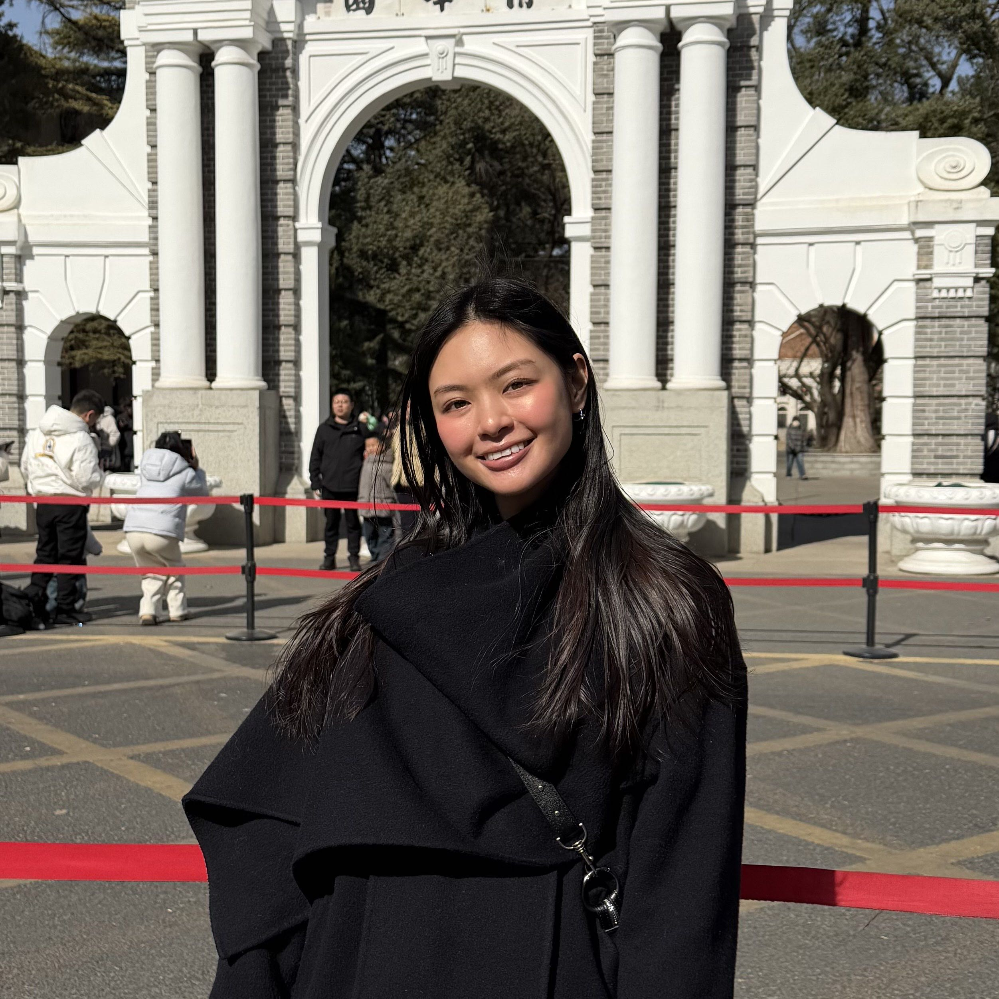

Jenny's Design Records
♫ Welcome to My World - Jenny Le
2026
Welcome!
Hi, I’m Jenny — a UX design student from Oslo passionate about creating thoughtful, playful, and user-centered digital experiences. This portfolio is a curated collection of my projects, where each case reflects my interest in UX, interaction design, and visual storytelling. Feel free to explore!
